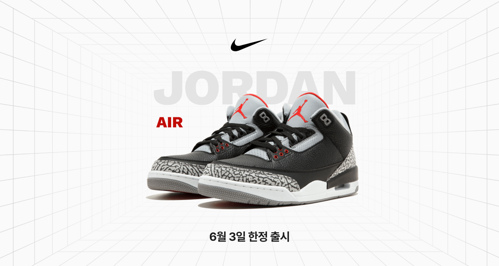

런칭관

나이키 에어 조던 레트로 3
당신의 스피드를 선택하세요.
멈추지 않는 가속력의 수퍼플리아, 범접할 수 없는
민첩성의 베이퍼. 6월 4일 출시 예정
모든 전설의 시작. 1971년, 나이키는 ‘블루 리본 스포츠(Blue Ribbon Sports)’에서 사명을 변경함과 동시에 신발 제조 세계로의 거대한 첫발을 내디뎠습니다. 공동 창업자인 빌 바워만은 수년간 운동선수들의 신발을 개선하는 데 매진해 왔습니다. 어느 날 집에서 아내의 와플 기계를 유심히 보던 그는, 눈앞에 펼쳐진 격자무늬 패턴에서 즉각적인 영감을 얻게 됩니다. 그는 곧바로 와플 기계에 액체 우레탄을 부으며 실험에...
Jacquemus+Nike Moon Shoe는 1인당 3켤레로 제한되며,
- - 크링클 이팩트 나일론 소재 스니커즈
- - 가죽 스우시 및 뒷 부분의 오버레이
- - 슈레이스 팁의 엠보싱 미니 스우시
- - 텅의 Jacquemus로고 라벨
- - 인솔의 스트라이프 Jacquemus 로고 라벨 스티치
- - 재생 고무 소재 슬림 아웃솔
- - 오리지널 디자인을 연상시키는 빈티지 감성 포장
- - 나이키의 기원을 기리는 "Blue Ribbon Sports" 배지
Jacquemus + Nike « Moon Shoe »는 또한 다음 매장에서 구매하실 수 있습니다:
- Paris, Montaigne
- Paris, Galeries Lafayette
- Nice, Galeries Lafayette
- Courchevel
- New York, Soho
- Los Angeles, West Hollywood
- Montecito